Soru 1Cevap: B
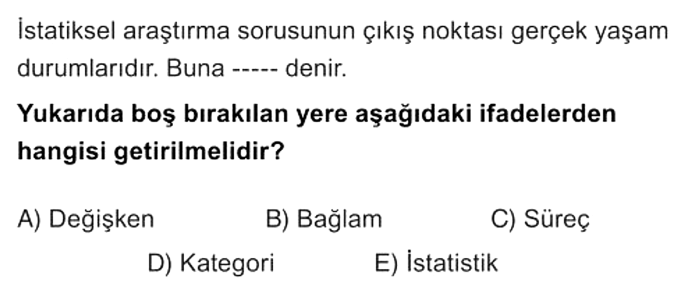
Çözüm
- Araştırma sorusu gerçek yaşamdaki bir durumdan doğar.
- Verinin hangi koşullarda ve hangi amaçla ele alındığını belirleyen bu çerçeveye bağlam denir.
- Boşluğa "bağlam" gelir → B.
Cevap: B
Soru 2Cevap: E
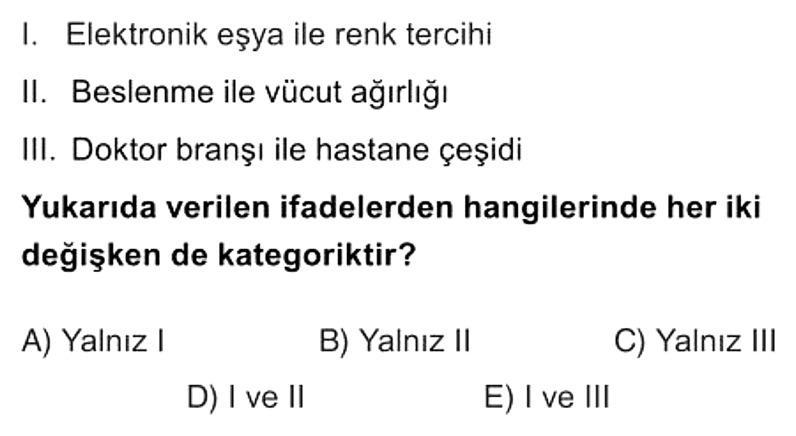
Çözüm
- I: elektronik eşya ve renk tercihi ikisi de kategorik.
- II: vücut ağırlığı sayısal (nicel) bir değişkendir.
- III: doktor branşı ve hastane çeşidi kategorik. Cevap: I ve III.
Cevap: E
Soru 3Cevap: D
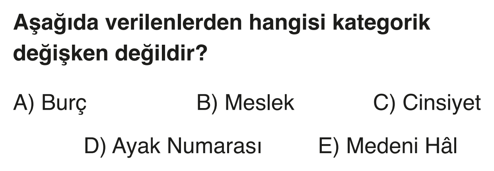
Çözüm
- Burç, meslek, cinsiyet ve medeni hâl gruplardır → kategorik.
- Ayak numarası sayılarla ifade edilir → nicel.
- Kategorik olmayan → D.
Cevap: D
Soru 4Cevap: C
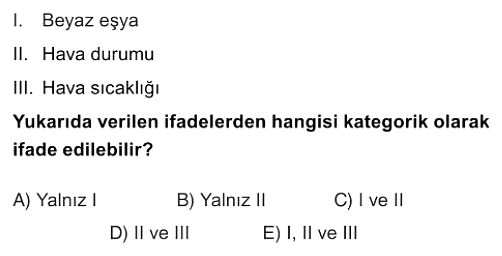
Çözüm
- Beyaz eşya türleri (buzdolabı, fırın…) gruptur.
- Hava durumu (güneşli, yağmurlu…) gruptur.
- Hava sıcaklığı derece ile ölçülür → nicel. Cevap: I ve II.
Cevap: C
Soru 5Cevap: C
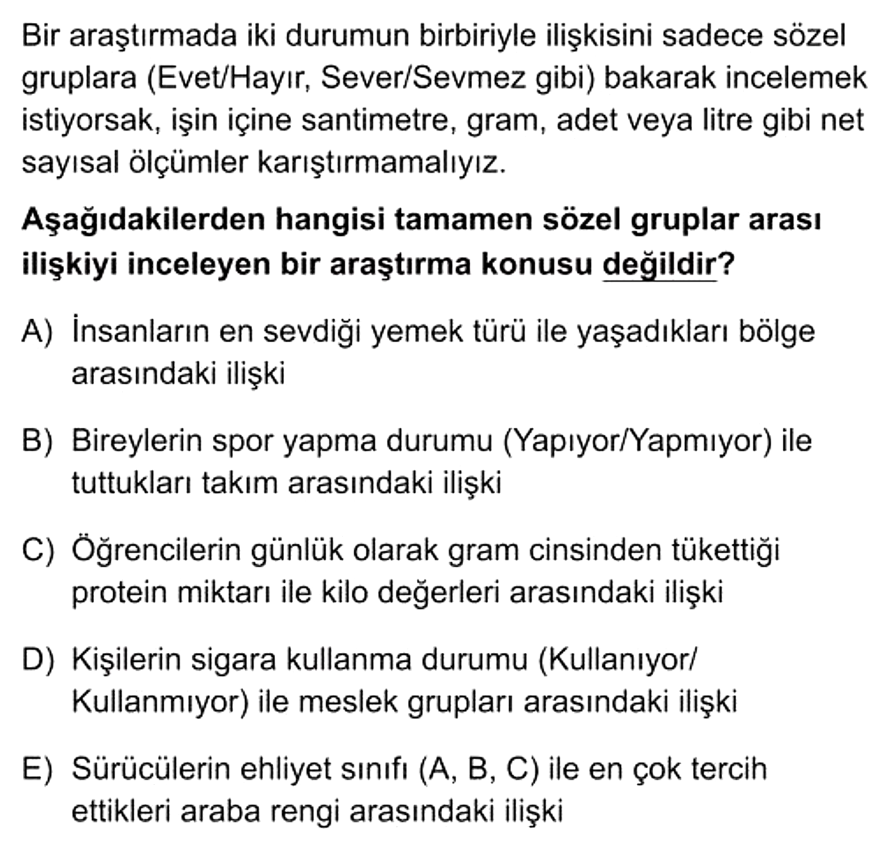
Çözüm
- Sözel gruplar arası ilişkide iki değişken de kategorik olmalıdır.
- A, B, D ve E'deki değişkenler gruplara ayrılır.
- C'de gram cinsinden protein ve kilo nicel değişkenlerdir → C.
Cevap: C
Soru 6Cevap: D
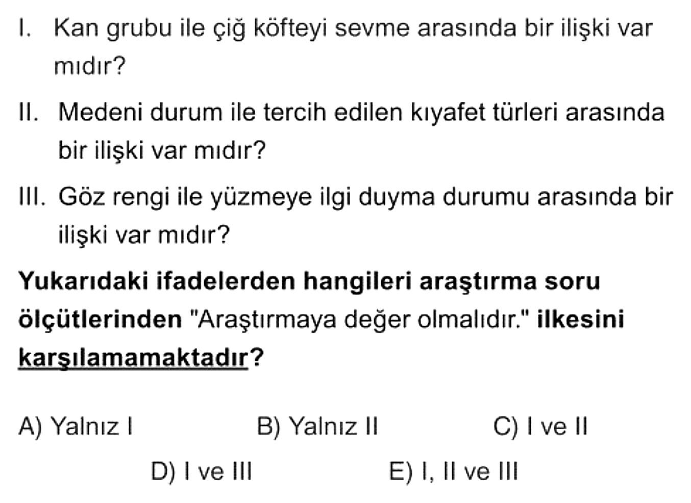
Çözüm
- Kan grubu–çiğ köfte ve göz rengi–yüzme ilgisi arasında bilimsel ya da pratik bir anlam yoktur.
- Medeni durum ile kıyafet tercihi pazarlama açısından anlamlı olabilir.
- Araştırmaya değer olmayan: I ve III.
Cevap: D
Soru 7Cevap: C
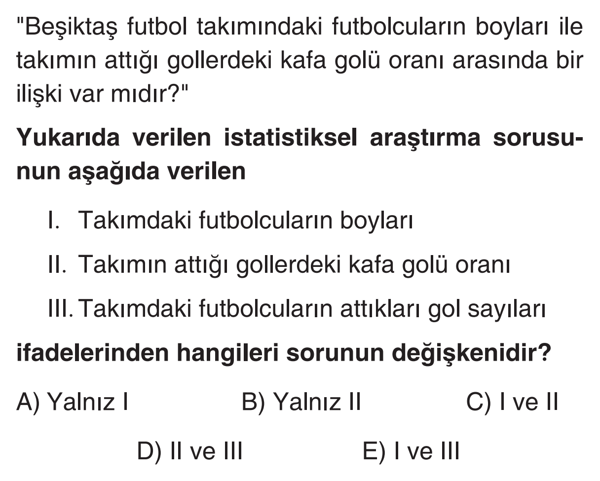
Çözüm
- Soru futbolcuların boyları ile kafa golü oranı arasındaki ilişkiyi soruyor.
- Değişkenler: boy (I) ve kafa golü oranı (II).
- Gol sayıları soruda değişken olarak geçmez. Cevap: I ve II.
Cevap: C
Soru 8Cevap: B
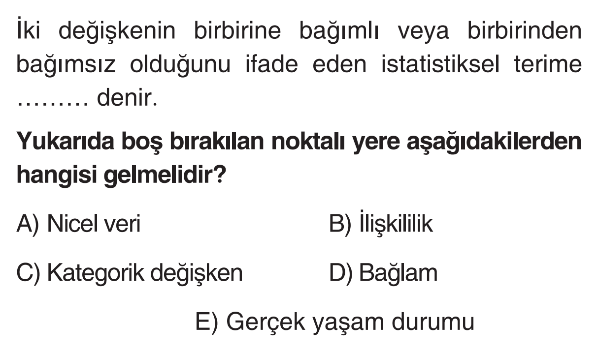
Çözüm
- İki değişkenin birbirine bağlı olup olmadığı inceleniyor.
- Bu durumu ifade eden istatistiksel terim ilişkililiktir.
- Cevap B.
Cevap: B
Soru 9Cevap: A
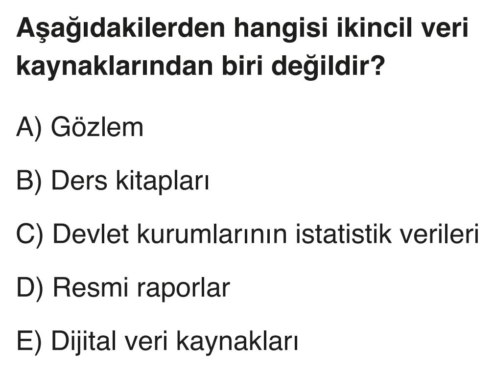
Çözüm
- İkincil veri kaynakları başkalarının hazırladığı kitap, istatistik, rapor ve dijital kaynaklardır.
- Gözlem, araştırmacının kendisinin yaptığı birincil yöntemdir.
- İkincil olmayan → A.
Cevap: A
Soru 10Cevap: B
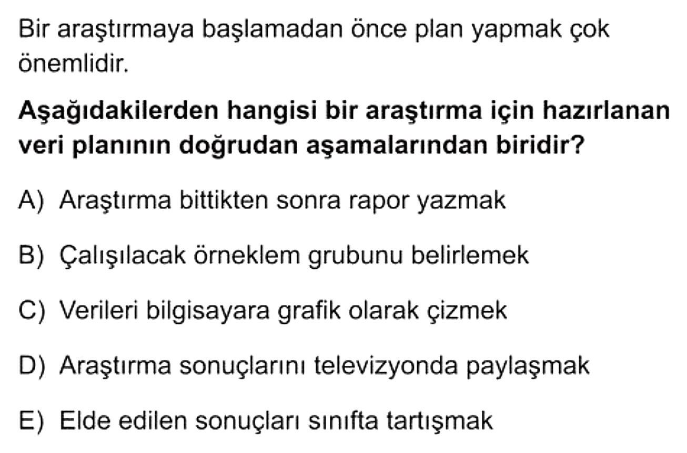
Çözüm
- Veri planı araştırma başlamadan önce yapılır.
- Rapor yazma, grafik çizme, paylaşma ve tartışma veriler toplandıktan sonraki işlerdir.
- Örneklem grubunu belirlemek planın aşamasıdır → B.
Cevap: B
Soru 11Cevap: E
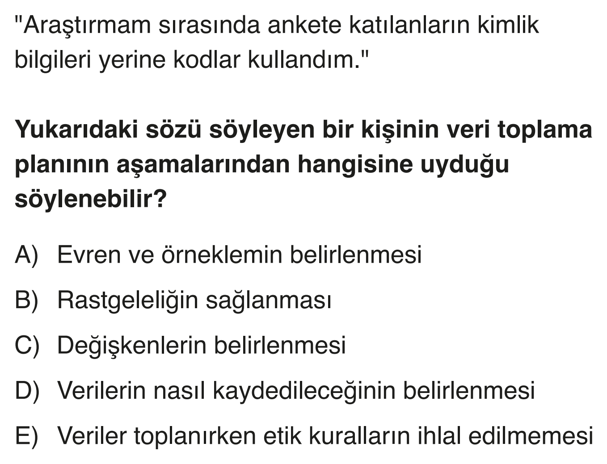
Çözüm
- Kimlik bilgileri yerine kod kullanmak katılımcıların gizliliğini korur.
- Gizlilik, veri toplama planındaki etik kurallarla ilgilidir.
- Uyulan aşama: etik kuralların ihlal edilmemesi → E.
Cevap: E
Soru 12Cevap: A
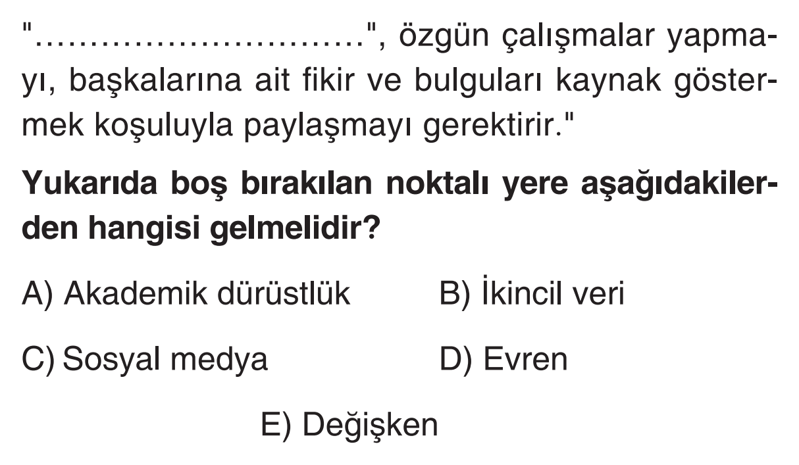
Çözüm
- Özgün çalışma yapmak ve başkalarının bulgularını kaynak göstererek kullanmak tanımlanıyor.
- Bu, akademik dürüstlüğün tanımıdır.
- Cevap A.
Cevap: A
Soru 13Cevap: D
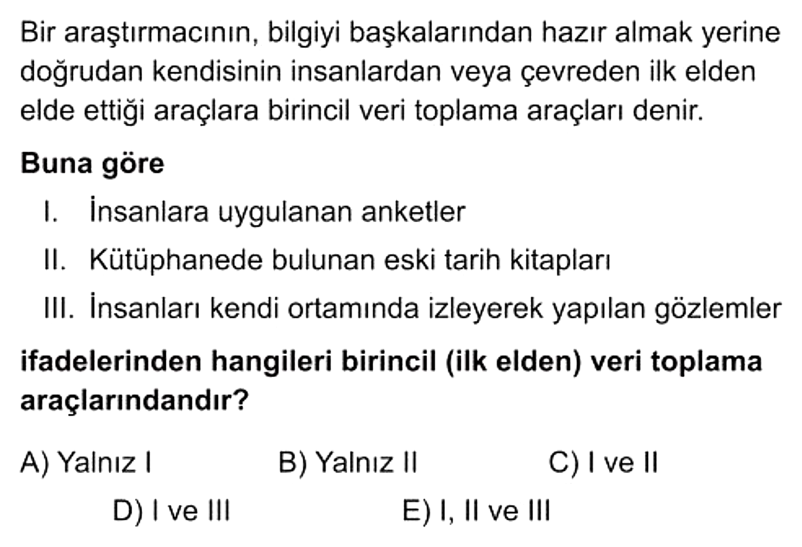
Çözüm
- Birincil veri araştırmacının ilk elden topladığı veridir.
- Anket ve gözlem ilk elden yapılır (I, III).
- Kütüphanedeki eski kitaplar hazır (ikincil) kaynaktır. Cevap: I ve III.
Cevap: D
Soru 14Cevap: B
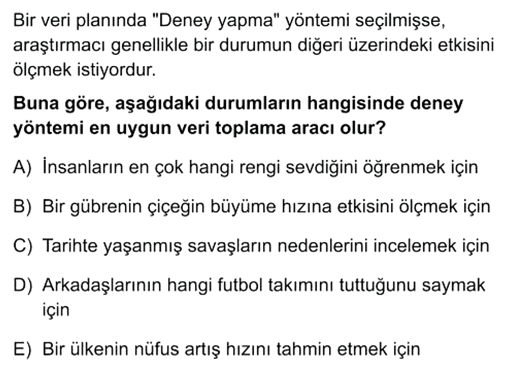
Çözüm
- Deney, bir değişkenin diğeri üzerindeki etkisini kontrollü ortamda ölçer.
- Renk tercihi ve takım sayımı anketle; tarih ve nüfus ikincil kaynaklarla incelenir.
- Gübrenin çiçek büyümesine etkisi deneyle ölçülür → B.
Cevap: B
Soru 15Cevap: E
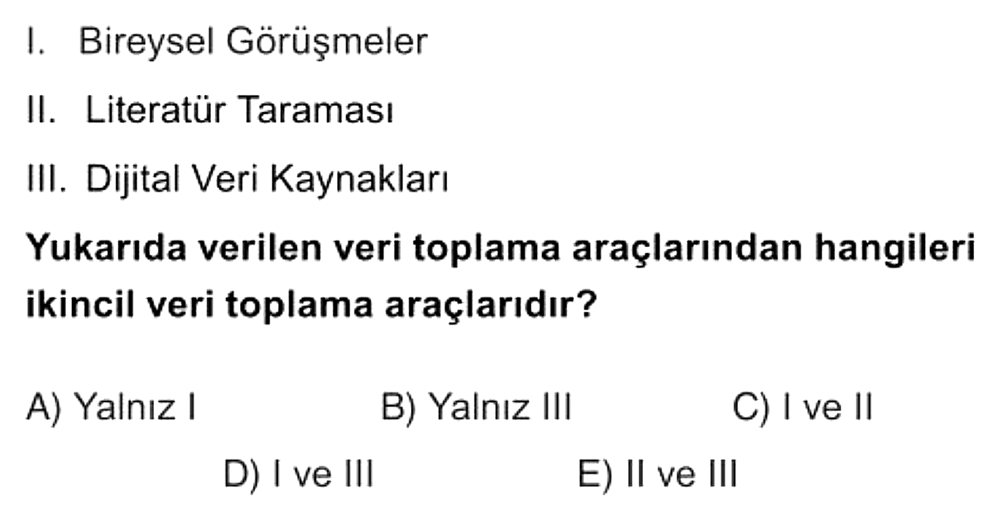
Çözüm
- Bireysel görüşmeler araştırmacının kendi topladığı birincil veridir.
- Literatür taraması ve dijital veri kaynakları hazır verilerdir.
- İkincil: II ve III → E.
Cevap: E
Soru 16Cevap: E
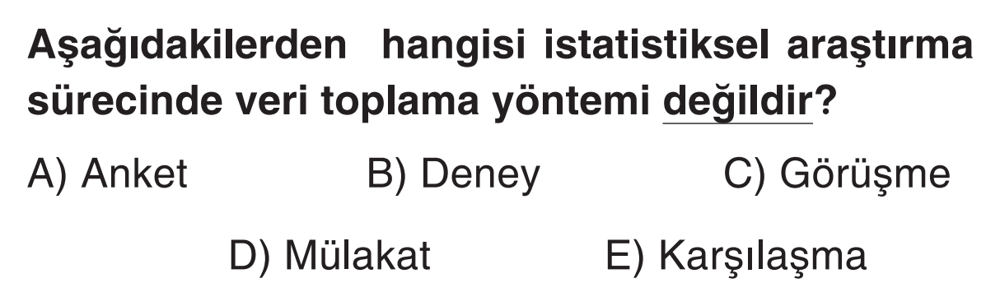
Çözüm
- Anket, deney, görüşme ve mülakat veri toplama yöntemleridir.
- Karşılaştırma ise analiz sırasında yapılan bir işlemdir; veri toplama yöntemi değildir.
- Cevap E.
Cevap: E
Soru 17Cevap: C
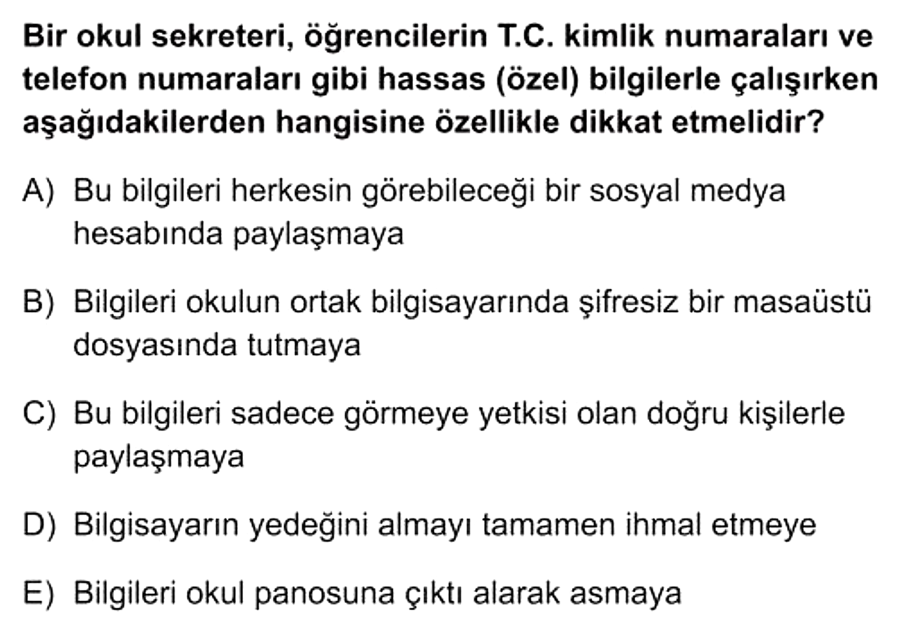
Çözüm
- Kimlik ve telefon numarası gibi bilgiler hassas kişisel verilerdir.
- Bu bilgiler herkese açık yerlerde paylaşılmamalı, şifresiz tutulmamalıdır.
- Yalnızca yetkili kişilerle paylaşılmalıdır → C.
Cevap: C
Soru 18Cevap: E
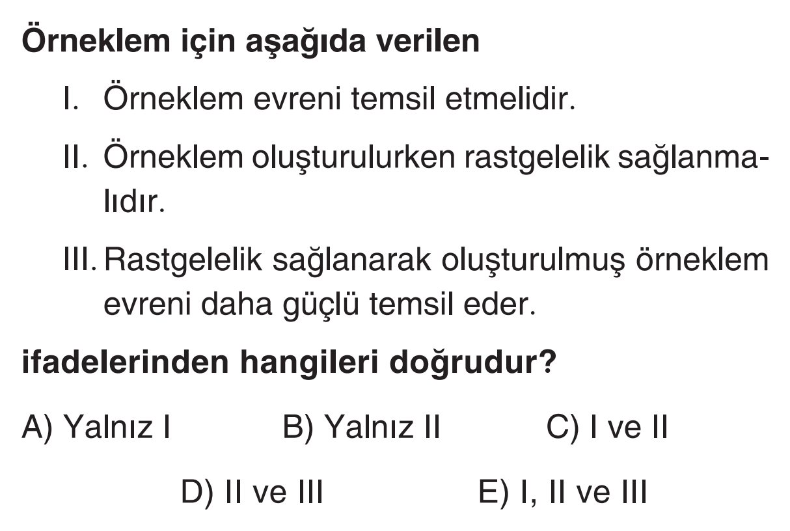
Çözüm
- Örneklem evreni temsil etmelidir (I).
- Örneklem oluşturulurken rastgelelik sağlanmalıdır (II).
- Rastgele seçilen örneklem evreni daha güçlü temsil eder (III). Cevap E.
Cevap: E
Soru 19Cevap: A
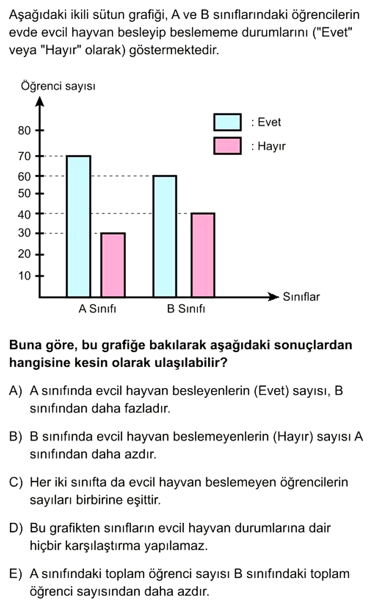
Çözüm
- A sınıfı: evet 70, hayır 30; B sınıfı: evet 60, hayır 40.
- Evet diyenler A'da 70 > B'de 60 → A doğru.
- B'de hayır 40 > A'da 30; sayılar eşit değil; sınıf mevcutları 100'er. Cevap A.
Cevap: A
Soru 20Cevap: C
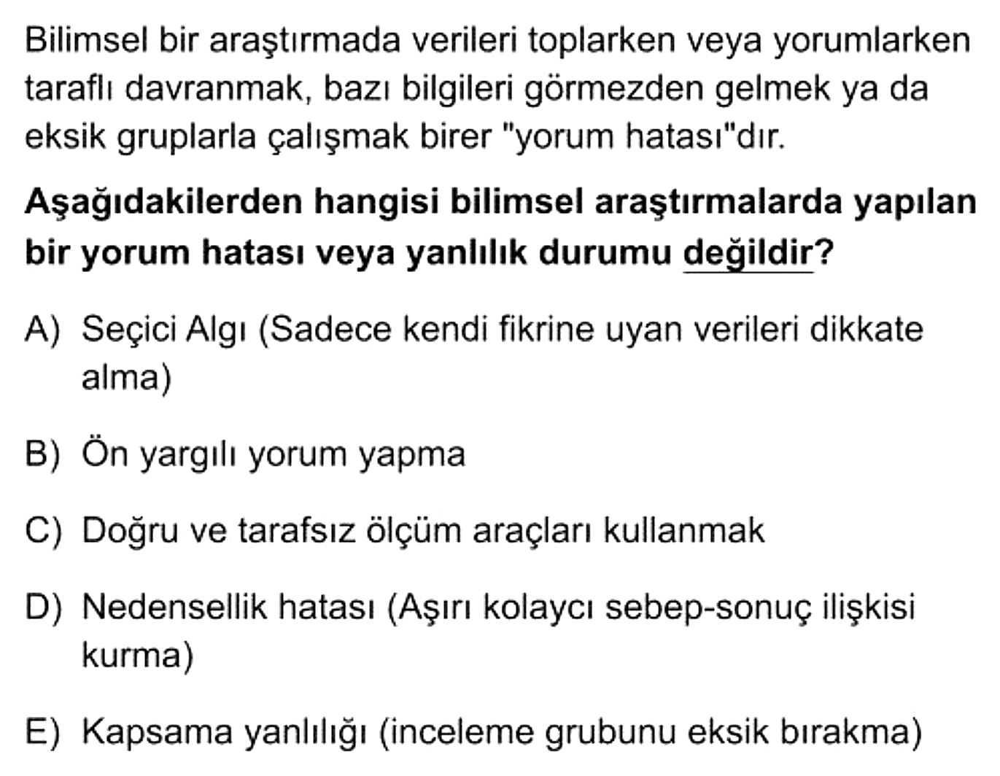
Çözüm
- Seçici algı, ön yargılı yorum, nedensellik hatası ve kapsama yanlılığı birer yorum hatasıdır.
- Doğru ve tarafsız ölçüm araçları kullanmak ise hatayı önleyen bir davranıştır.
- Hata olmayan → C.
Cevap: C
Soru 21Cevap: C
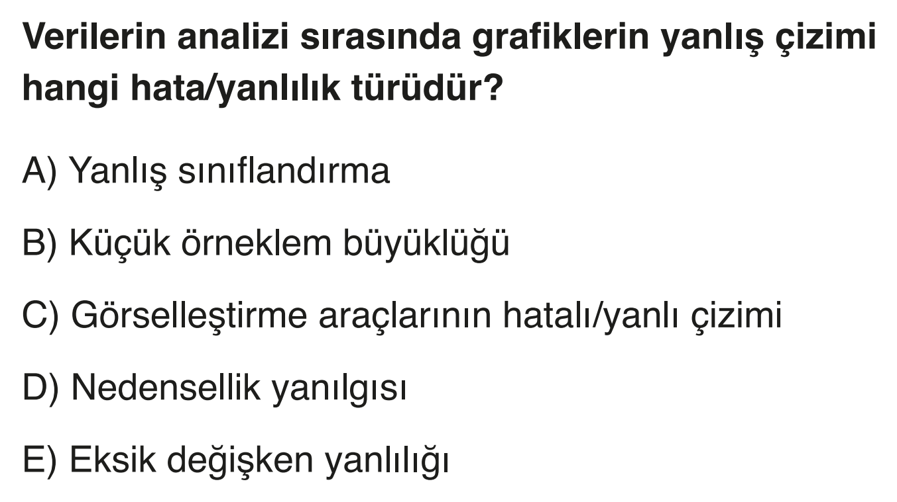
Çözüm
- Hata türleri arasında grafiklerin verileri yanlış yansıtacak biçimde çizilmesi de vardır.
- Buna görselleştirme araçlarının hatalı/yanlı çizimi denir.
- Cevap C.
Cevap: C
Soru 22Cevap: B
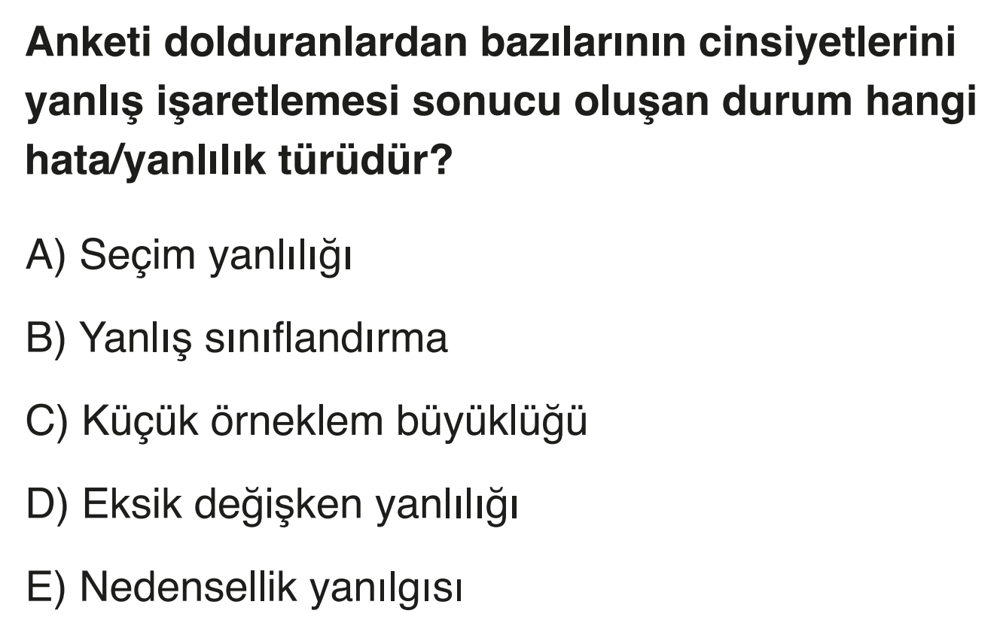
Çözüm
- Katılımcıların bir kısmı yanlış cinsiyet kategorisine kaydedilmiştir.
- Kategorik değişkenin yanlış kodlanması/işaretlenmesi sonuçları bozar.
- Bu yanlış sınıflandırmadır → B.
Cevap: B
Soru 23Cevap: E
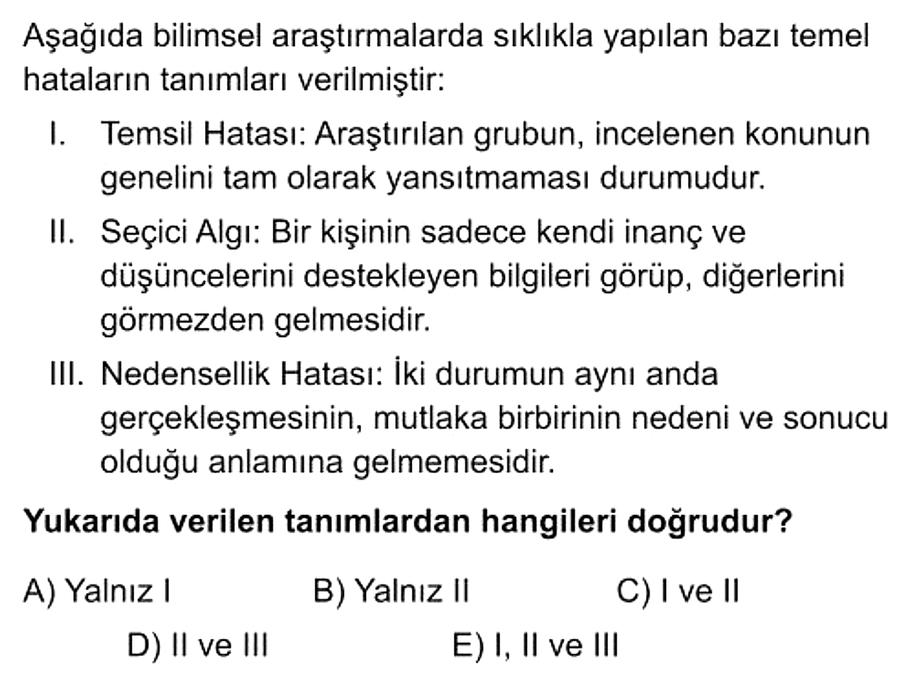
Çözüm
- Temsil hatası: örneklemin evreni yansıtmaması (I doğru).
- Seçici algı: yalnızca kendi düşüncesini destekleyen bilgileri görmek (II doğru).
- Birlikte görülen iki durum mutlaka neden–sonuç değildir; bunu göz ardı etmek nedensellik hatasıdır (III doğru). Cevap E.
Cevap: E
Soru 24Cevap: A
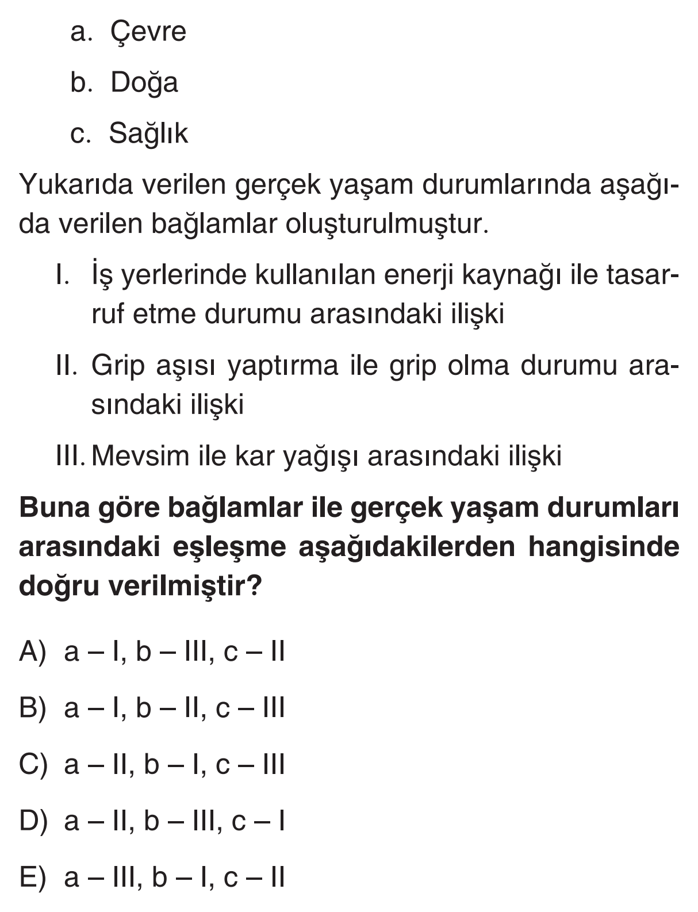
Çözüm
- Enerji kaynağı ile tasarruf → çevre (a–I).
- Mevsim ile kar yağışı → doğa (b–III).
- Grip aşısı ile grip olma → sağlık (c–II). Cevap A.
Cevap: A
Soru 25Cevap: B
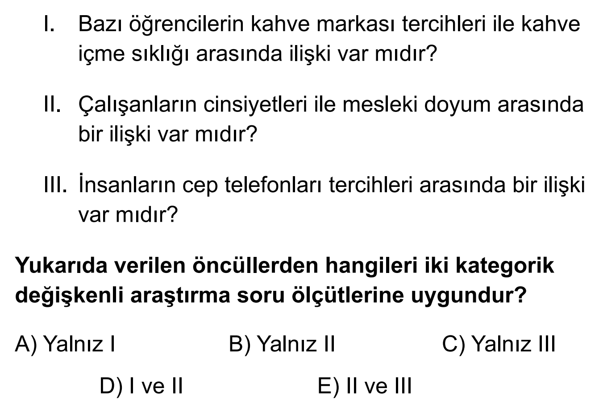
Çözüm
- I'de "bazı öğrenciler" ifadesi evreni belirsiz kılar.
- III'te yalnızca tek değişken (telefon tercihi) vardır; ilişki kurulamaz.
- II tüm ölçütlere uygundur → Yalnız II.
Cevap: B
Soru 26Cevap: C
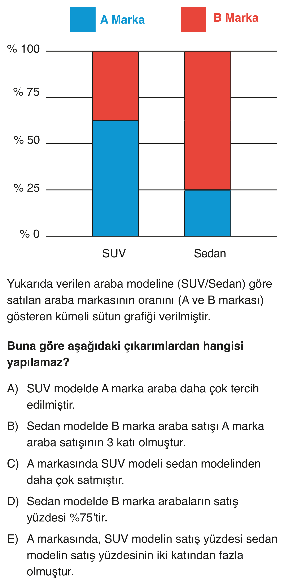
Çözüm
- Grafik yüzde gösterir: SUV'da A %62,5, B %37,5; sedanda A %25, B %75 → A, B, D doğru.
- A markasında SUV yüzdesi (%62,5) sedan yüzdesinin (%25) iki katından fazla → E doğru.
- Satış sayıları bilinmediği için A markasının SUV'u sedandan çok sattığı söylenemez → C.
Cevap: C
Soru 27Cevap: C
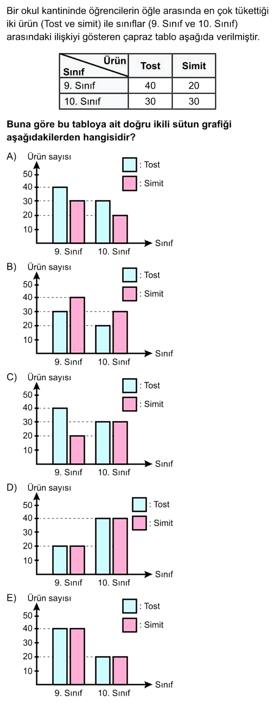
Çözüm
- 9. sınıf: tost 40, simit 20; 10. sınıf: tost 30, simit 30.
- Grafikte her sınıf için iki sütun (tost, simit) bu değerlerde olmalıdır.
- Uyan grafik C'dir.
Cevap: C
Soru 28Cevap: D
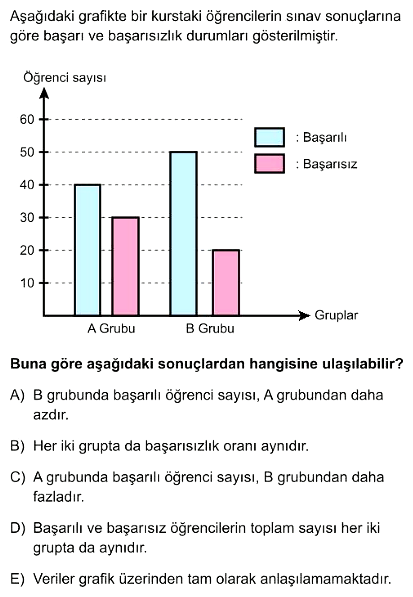
Çözüm
- A grubu: başarılı 40, başarısız 30 → toplam 70.
- B grubu: başarılı 50, başarısız 20 → toplam 70.
- İki grubun toplamları eşittir → D; diğer seçenekler grafikle çelişir.
Cevap: D
Soru 29Cevap: C
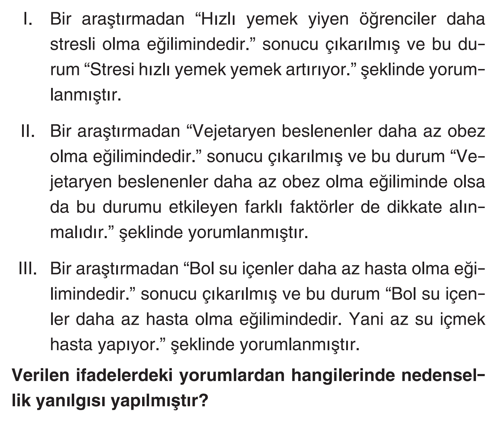
A)Yalnız IB)Yalnız IIC)I ve IIID)II ve IIIE)I, II ve III
Çözüm
- I'de "stresi hızlı yemek yemek artırıyor" denerek ilişki neden–sonuç sayılmıştır.
- II'de başka faktörlerin de dikkate alınması gerektiği vurgulanmış; yanılgı yoktur.
- III'te "az su içmek hasta yapıyor" denerek nedensellik kurulmuştur. Cevap: I ve III.
Cevap: C
Soru 30Cevap: E
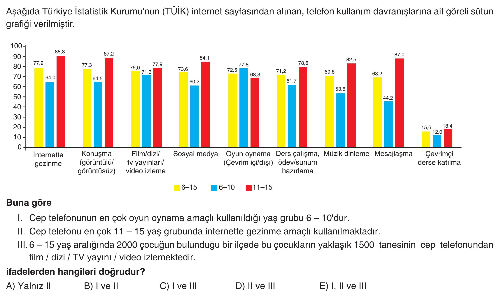
Çözüm
- Oyun oynamada en yüksek oran 6–10 yaş grubundadır (%77,8) → I doğru.
- 11–15 yaş grubunun en yüksek oranı internette gezinmedir (%88,8) → II doğru.
- 6–15 yaşta film/dizi izleme %75 → 2000 · 0,75 = 1500 → III doğru. Cevap E.
Cevap: E